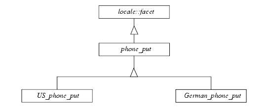

Now that we have locales and facets in C++, we can encapsulate the locale-dependent parsing and formatting of telephone numbers into a new facet class. Let's focus on formatting in this example. We call the new facet class phone_put, analogous to time_put, money_put, etc.
The phone_put facet class serves solely as a base class for facet classes that actually implement the locale-dependent formatting. The relationship of class phone_put to the other facet classes is illustrated in Figure 13:

Here is a first tentative declaration of the new facet class phone_put:
class phone_put: public std::locale::facet { // 1
public:
static std::locale::id id; // 2
typedef std::string string_type;
phone_put (std::size_t refs = 0)
: std::locale::facet (refs) { } // 3
string_type put (const string_type &cntryName,
const string_type &areaCode,
const string_type &extension) const; // 4
};
| //1 | Derive from the base class std::locale::facet, so that a locale object is able to maintain instances of our new phone facet class. |
| //2 | New base facet classes need to define a static data member id of type std::locale::id. |
| //3 | Define a constructor that takes the reference count that is handed over to the base class. |
| //4 | Define a function put() that does the actual formatting. |